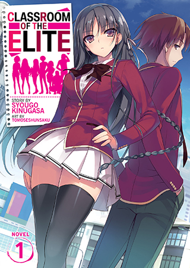

Youkoso Jitsuryoku Shijou Shugi no Kyoushitsu e
Sinopsis
SMA Kōdo Ikusei adalah sebuah SMA elit di Tokyo yang didirikan oleh pemerintah dengan fasilitas super mewah untuk mendididk generasi muda penerus di masa depan. Sekolah ini memberikan jaminan nyaris 100% bagi lulusannya untuk masuk ke universitas ataupun dipekerjakan. Dengan membebaskan para muridnya untuk berlaku, sekolah ini tampak bagaikan surga. Tapi hanya mereka yang terbaik sajalah yang akan menerima perlakuan terbaik.